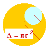

My name is Bruce McLean and I have volunteered to teach some of the 6th graders at William James Middle School a programming language called Java and a web based language called HTML. I am a mathematics professor at Georgia Southern University and my daughter, Emily, will be in the class. I will be assisted by another professor, Don Brown, and a parent, Jack Tenzel, an ophthalmologist here in Statesboro. I certainly have not had the time to talk to all of the parents, but if you have an expertise in this area, drop me a line at mac@gsu.cs.gasou.edu and you can help also.
HTML stands for Hyper Text Markup Language. It is a language that all present day browsers can read and then publish to a web page. Some examples of browsers are Netscape and Internet Explorer. The latter one is owned by Microsoft and the first by Sun microsystems. Sun also developed the Java programming language and the java compiler can be downloaded from htttp://www.sun.com for free. If you have any trouble obtaining this compiler or installing it on your own computer, drop me a line. The only prerequisite for the course is a love of mathematics. Without the knowlededge of mathematics, programming a computer is a waste of time.
 I envision placing graphics on the web with mathematical lessons being learned at the same time. In a few weeks, we should be able to draw pictures, calculate lengths, areas, and volumes while displaying our results on the web.
We will meet once a week for 50 minutes for the rest of the academic year.